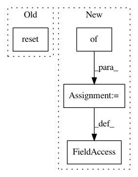

28ec5687220f562b3bd1b220ed80eded79c54824,steps/pytorch/callbacks.py,TrainingMonitor,on_train_begin,#TrainingMonitor#,114
Before Change
self.batch_every = batch_every
def on_train_begin(self, *args, **kwargs):
self.epoch_loss_averager.reset()
self.epoch_id = 0
self.batch_id = 0
def on_epoch_end(self, *args, **kwargs):
After Change
self.batch_every = batch_every
def on_train_begin(self, *args, **kwargs):
self.epoch_loss_averagers = {}
self.epoch_id = 0
self.batch_id = 0
def on_epoch_end(self, *args, **kwargs):
In pattern: SUPERPATTERN
Frequency: 3
Non-data size: 4
Instances
Project Name: minerva-ml/open-solution-data-science-bowl-2018
Commit Name: 28ec5687220f562b3bd1b220ed80eded79c54824
Time: 2018-02-09
Author: kamil-kaczmarek@users.noreply.github.com
File Name: steps/pytorch/callbacks.py
Class Name: TrainingMonitor
Method Name: on_train_begin
Project Name: minerva-ml/open-solution-data-science-bowl-2018
Commit Name: 28ec5687220f562b3bd1b220ed80eded79c54824
Time: 2018-02-09
Author: kamil-kaczmarek@users.noreply.github.com
File Name: steps/pytorch/callbacks.py
Class Name: NeptuneMonitor
Method Name: on_train_begin
Project Name: openai/baselines
Commit Name: b875fb7b5e4feb85b9f1f1bf4e78f64c75595664
Time: 2019-02-27
Author: peterzhokhoff@gmail.com
File Name: baselines/common/tests/envs/mnist_env.py
Class Name: MnistEnv
Method Name: __init__